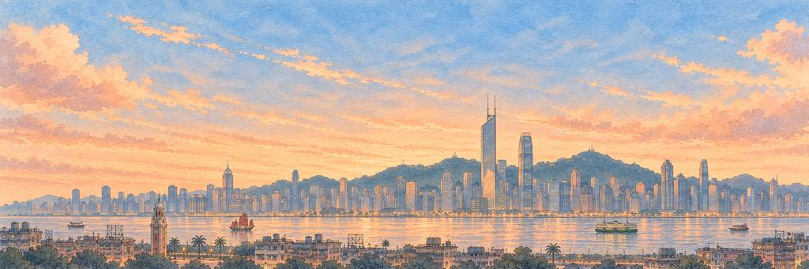
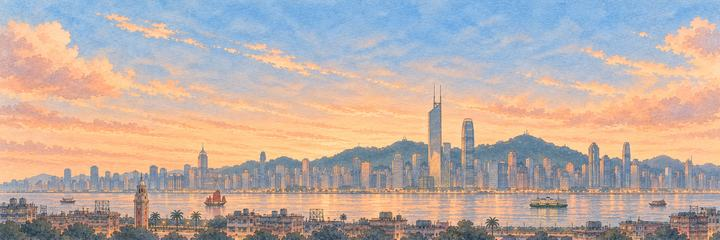
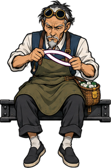
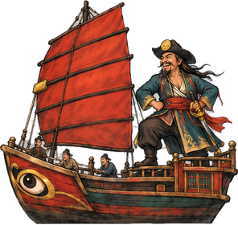

Hong Kong paper plane game
See the lights come on over Victoria Harbour.
Signs hang low over the streets. Get past the Neon Master, then the pirate.
The fragrant harbour
Hong Kong means "fragrant harbour", perhaps after the incense wood once shipped from its shores. Britain took Hong Kong Island in 1842 and later added Kowloon and the New Territories. In 1997 Hong Kong returned to China as a special administrative region. Today more than seven million people live between its steep hills and the sea.
“I'd find out if the harbour still smells sweet.”
The landmarkThe Bank of China Tower
The Bank of China Tower was finished in 1990. Its architect, I. M. Pei, based it on bamboo, which grows section by section: four glass shafts rise from a square base and stop one by one, until a single triangle reaches the top, 367 metres up with its two masts.
Neighbourhoods
Central, on the north shore of Hong Kong Island, is the city's main business district. Across the water lies Kowloon. Mong Kok, in Kowloon, is one of the most crowded places on Earth, with about 130,000 people per square kilometre. Tung Choi Street there is called the Ladies' Market, and Fa Yuen Street is called Sneakers Street. Sham Shui Po, in the north-west of Kowloon, is one of the oldest districts. Apliu Street there is known for electronics, and Nam Cheong Street for fabric shops. In Yau Ma Tei, the Temple Street night market opens in the afternoon and gets lively at dusk.
The harbour
Victoria Harbour lies between Hong Kong Island and the Kowloon peninsula. Its water is deep and sheltered, which made it a good port. Today it covers about 41 km², and land taken from the sea has made it narrower. On the Kowloon side, the Avenue of Stars runs along the waterfront in Tsim Sha Tsui. It opened on 28 April 2004 and honours stars of Hong Kong film.
The skyline
Hong Kong has more skyscrapers than any other city in the world. The tallest is the International Commerce Centre in West Kowloon, finished in 2010. It stands 484 metres tall and is the only building in the city with more than 100 floors. Its viewing deck, Sky100, is on level 100, 393 metres up.
When to see it
Go up Victoria Peak at dusk and watch the lights come on. At 552 metres, it is the tallest hill on Hong Kong Island. After dark, walk the Tsim Sha Tsui waterfront for the night view across the harbour.
Who keeps the wish in Hong Kong.
An Elite wakes first; the Boss guards the wish itself. Hit their weak points for a BONK!, land the last blow for a KO!, and each one grins and takes a bow.
-
The Elite


The Neon Master
Bends light into letters · Keeper of the night streets
For decades Hong Kong's streets glowed with neon signs, each one made by hand. A sign-maker heats a glass tube over a flame, bends it into letters, then fills it with a gas that shines when electricity runs through it. Many signs have been taken down since the 2000s, and only a few masters still do the work.
The Neon Master pushes up his goggles and holds a glowing tube up to the light. He jumps, and the tube in his hands twangs. He checks it for kinks. He bows, and the sign behind him lights up THANK YOU.
“I'd ask him to spell my name.”
-
The Boss

The Pearl River Pirate
Ruled the delta under a red sail · Keeper of Victoria Harbour
Around 1807 Cheung Po Tsai commanded the Red Flag Fleet, one of the largest pirate fleets in history, among the islands of the Pearl River Delta. In 1810 he surrendered to the Qing government and became an officer in its navy. On Cheung Chau island, a small cave is still said to hide his treasure.
The captain throws back his head and laughs, and his junk turns its painted eye on the plane. He staggers on the rolling deck and laughs it off. He bows grandly. The red sail drops behind him and knocks his hat sideways.
“I'd look for his treasure cave, just in case.”
Hong Kong cleared. The harbour lit up, one window at a time.
- The Neon Master fixed the same tube three times. It looked perfect to me.
- The pirate laughed every time I missed. He laughed when I didn't, too.
The plane reaches Hong Kong from Beijing.